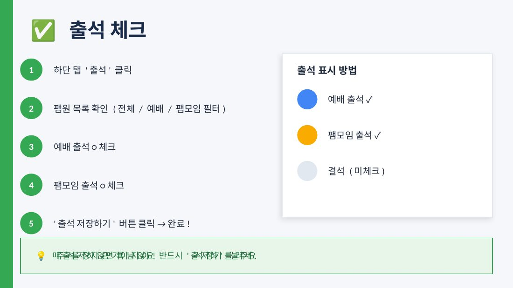

01
운영 프로세스 개선 · 자동화 · 이상값 추적 · 1인 · 2026.03 ~ 운영 중JOYHILL — 공용 계정과 시트 스크립트에서, 사람마다 쓰는 서비스로
서비스는 교인 개인정보가 있어 로그인 전용이고, 저장소는 비공개입니다.
운영 프로세스 분석·구조 개선운영 데이터 조회·분석반복 업무 자동화Google Sheets
BEFORE
교회 청년부 출석·조직 정보를 앱시트와 구글시트로 관리했습니다.
- 앱과 시트가 스크립트 하나로 동기화돼 반영되기까지 시간이 꽤 걸림
- 운영진 5~6명이 공용 계정 하나를 같이 써서 로그인 문제가 반복되고 불편이 큼
- 출석·공지·기도제목·새가족 관리가 여러 곳에 흩어짐
→
AFTER
자체 DB 기반 웹 서비스로 옮겼습니다.
- 사람마다 개인 계정, 5단계 역할별로 쓸 수 있는 기능과 범위를 나눔
- 출석은 앱에서 바로 DB에 기록, 동기화를 기다리지 않음
- 운영진이 익숙한 구글시트는 매일 자동으로 채워지는 사본으로 유지
쓰던 시트를 그대로 살린 자동 백업
PostgreSQL
회원 · 출석
→
회원 · 출석
스케줄러
매일 새벽 · Asia/Seoul
→
매일 새벽 · Asia/Seoul
Google Sheets API
서비스 계정
→
서비스 계정
운영진 시트
회원 탭 · 출석 탭
+
회원 탭 · 출석 탭
관리자 수동 실행
필요할 때 버튼으로
+
필요할 때 버튼으로
S3 비공개 버킷
DB 백업 이중 보관
DB 백업 이중 보관
숫자가 이상하면 끝까지 따라감
출석률이 100%를 넘는 인원이 있었습니다. 날짜별 기록이 없던 시기를 대신 채우던 집계 값과 새로 쌓인 날짜별 기록이 단순 합산돼 같은 기간이 두 번 세어지고 있었습니다. 날짜별 기록은 보존하고 겹치는 집계 값만 정리했습니다.실패가 성공처럼 보이지 않게
마지막 백업 시각은 시트 쓰기에 성공했을 때만 기록합니다. 자동 작업은 조용히 실패하기 쉬워서, 화면에 보이는 시각이 곧 마지막 성공 시각이 되게 했습니다.운영하다 발견한 시간대 오류
새벽에 돌아야 할 백업이 낮 12시에 돌고 있었습니다. 서버 시간대가 UTC인데 스케줄에 시간대를 지정하지 않은 것이 원인이어서Asia/Seoul을 명시해 고쳤습니다.문제
공용 계정 공유로 반복되던 로그인 문제, 느린 동기화, 흩어진 관리 업무.개선 · 본인 역할
기획·설계·프론트엔드·백엔드·배포·운영. 개인 계정과 5단계 역할별 권한, 자동 백업, 배포 자동화, 역할별 사용 가이드 10쪽, 확장 회의 기획·진행.성과
217개 등록 계정
2026년 3월 첫 커밋 2주 만에 실데이터로 배포했고 지금도 운영 중입니다. 운영진은 동기화를 기다리거나 계정을 돌려 쓰지 않습니다.


쿠팡이츠에 적용한다면 · 기존 도구를 지키며 바꾸기 · 현장이 익숙한 시트를 없애지 않고 자동으로 채워지는 사본으로 남겼기 때문에, 운영진이 새 서비스로 옮겨 오는 동안에도 일이 멈추지 않았습니다. 요청 처리 흐름을 바꿀 때도 담당자가 쓰던 도구와 보고 방식을 먼저 확인하고, 그 위에서 바꾸겠습니다.